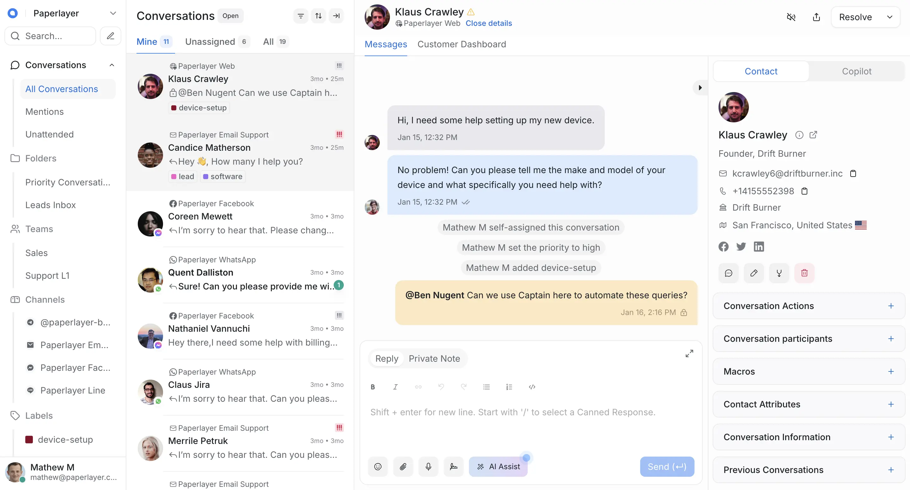

Analista de Dados e Desenvolvedor de Sistemas com experiência prática em automação, integrações via API e criação de soluções digitais do zero. Atuo na Medformula e Dr. Atende desenvolvendo pipelines de dados em Python, dashboards no Power BI e automações que transformam processos operacionais em rotinas eficientes.
Implantei e configurei o ChatWoot como plataforma de atendimento omnichannel para a empresa, substituindo a ferramenta anterior (Ialui) — integrando WhatsApp via GupShup, construindo o chatbot, os fluxogramas de atendimento e a distribuição para múltiplas equipes e unidades. Também criei o Acadevo, um sistema completo de gestão de academias hoje em produção em acadevo.com.br.
Certificado em AWS, Azure e Oracle Cloud. Graduando em Engenharia de Software pela Unicesumar.
Ferramentas & Habilidades
Tecnologias que uso no dia a dia para extrair valor dos dados e construir sistemas
Análise & Visualização
Power BIDAXExcel AvançadoStorytelling
Programação
PythonPandasNumPySQL
APIs & Automações
REST APIWhatsApp APIGupShupWebhookPostman
Chatbot & Atendimento
ChatWootChatbotFluxogramaAutomação
Cloud & Infra
AWSAzureOracle CloudDocker
Dados & Pipelines
Apache AirflowPySparkDelta LakeETL / ELT
Banco de Dados
PostgreSQLMySQL
Qualidade & Governança
Data QualityDocumentaçãoMonitoramentoGit
Painel ExecutivoJan — Jun 2025
Receita TotalR$ 2.4M+12.4%
Atendimentos8.312+8.2%
Conversão24.3%+2.1pp
Confirmações Bot91%+5 pts
Receita Mensal
Atendimentos / Semana
Dados e sistemas que geram resultados
Ofereço projetos de ponta a ponta: da coleta de dados via API e ETL em Python à entrega de dashboards no Power BI, passando pela criação de chatbots, automações WhatsApp e sistemas web completos.
Extração e tratamento de dados via API, pipelines ETL com Python, dashboards no Power BI e automações operacionais. Configuração e implantação do ChatWoot como plataforma de atendimento omnichannel (substituindo o Ialui), com integração WhatsApp via GupShup, chatbot, fluxograma de atendimento e distribuição por times e unidades. Desenvolvimento de automação em Python para confirmação de produtos via WhatsApp.
2024 — 2025
Desenvolvedor — Acadevo (Projeto próprio)
Desenvolvimento completo do sistema de gestão de academia Acadevo, hoje em produção e operante. Funcionalidades: gestão de alunos, planos, pagamentos, frequência e relatórios. Disponível em acadevo.com.br.
31/03/2025 — 10/04/2025
Trabalho voluntário como Analista de Dados e Automação
Automação de processos no Google Sheets para eliminar tarefas repetitivas e criação de uma lista de chamadas com backup automatizado.
20/03/2025 — 20/06/2025
Hackathon Unicesumar + Google
Desenvolvimento em grupo de um projeto de sustentabilidade no agronegócio.
17/03/2025
10ª Maratona CiberEducação Cisco Brasil
Curso de Defesa de Rede na UTFPR.
Certificações
AWS Certified Cloud Practitioner
AZ-900: Microsoft Azure Fundamentals
Oracle Cloud Certified Foundations Associate
Projetos

Atendimento Omnichannel — ChatWoot
Configurei e implantei o ChatWoot como plataforma de atendimento interno, substituindo o Ialui. Integração com WhatsApp via GupShup, chatbot com fluxograma automático e distribuição para múltiplas equipes e unidades.
Sistema web completo desenvolvido do zero — controle de alunos, planos, mensalidades, check-in, agenda de aulas e dashboard com KPIs em tempo real. Atualmente em produção e operante em acadevo.com.br.
Automação em Python para envio de mensagens de confirmação de pedidos via WhatsApp para clientes da Medformula. Integração com a API do GupShup, tratamento de respostas e fila com rate limiting. Taxa de confirmação acima de 90%.
Múltiplos painéis executivos desenvolvidos para Medformula, Dr. Atende e Cartão Atende — análise de atendimentos, receita, conversão e performance operacional.
Power BIDAXSQLPython
🔗
Pipelines ETL & Integrações API
Automações de extração, tratamento e carga de dados para os sistemas internos das empresas do grupo, conectando APIs de terceiros a bancos de dados e BIs.
PythonPandasREST APIPostgreSQL
Atendimento Omnichannel com ChatWoot
Contexto
A empresa utilizava o Ialui como ferramenta de chat interno, mas com o crescimento das operações e a chegada de múltiplas unidades, a plataforma começou a mostrar limitações: falta de controle granular sobre filas, ausência de um chatbot configurável e dificuldade para segmentar os atendimentos por time. A missão foi migrar para o ChatWoot e montar do zero toda a estrutura de atendimento.
O que foi implementado
Fiz a instalação e configuração completa do ChatWoot, conectei o canal de WhatsApp da empresa através da API do GupShup — o que envolveu configurar a conta no painel do GupShup, registrar o número no WhatsApp Business, gerar as credenciais e apontar o webhook corretamente para o ChatWoot receber e enviar mensagens em tempo real.
Com o canal funcionando, estruturei os times por área (Vendas, Suporte, Agendamento) e configurei a distribuição automática de conversas para cada equipe de acordo com o fluxo da mensagem. Para cada unidade da empresa foi criada uma caixa de entrada separada, mantendo os atendimentos isolados e rastreáveis.
O passo seguinte foi construir o chatbot com fluxograma de atendimento: mapeei os casos mais frequentes (confirmação de agenda, dúvidas sobre horários, direcionamento de novos clientes), montei os fluxos de resposta automática e configurei as regras de escalonamento para atendente humano quando necessário. O bot passou a enviar mensagens de confirmação de agendamentos automaticamente, eliminando boa parte do trabalho manual da equipe.
Dificuldades enfrentadas
A maior dor foi a configuração do webhook entre GupShup e ChatWoot. A documentação do GupShup nem sempre é clara sobre os headers esperados e o formato exato do payload, então precisei usar o Postman para interceptar e comparar as requisições até o handshake funcionar corretamente. Outro ponto crítico foi o delay de entrega das mensagens em horários de pico — resolvido ajustando os timeouts e habilitando filas no servidor. A configuração das permissões por time também exigiu várias iterações, já que cada unidade tinha necessidades diferentes de visibilidade sobre as conversas.
Resultado
O time de atendimento passou a operar com visibilidade total das conversas, histórico centralizado e distribuição automática. O chatbot reduziu significativamente o volume de mensagens repetitivas tratadas manualmente e o tempo médio de primeira resposta caiu de forma expressiva.
Tecnologias: ChatWoot · GupShup · WhatsApp Business API · Webhook · Postman · Fluxograma de atendimento · Múltiplas unidades
Acadevo — Sistema de Gestão de Academia
Contexto
O Acadevo nasceu de uma necessidade real: academias de menor porte não tinham acesso a sistemas de gestão acessíveis e completos — ou pagavam caro por plataformas cheias de funcionalidades que não usavam, ou controlavam tudo em planilhas e papel. Decidi construir do zero uma solução enxuta, funcional e com foco na rotina do gestor de academia.
O que foi construído
O sistema cobre o ciclo completo de operação: cadastro e gestão de alunos, controle de planos e vencimentos com alertas automáticos de inadimplência, registro de check-in por frequência, agenda de aulas e horários, relatórios financeiros por período e um dashboard com os KPIs principais da academia — alunos ativos, receita do mês, aulas do dia e taxa de retenção.
Todo o sistema foi desenvolvido pensando em responsividade, para que o dono da academia consiga usar no celular ou no computador da recepção sem perder nenhuma funcionalidade.
Dificuldades enfrentadas
Um dos pontos mais desafiadores foi a lógica de controle de planos: precisava lidar com planos mensais, trimestrais e anuais de forma consistente, calcular datas de vencimento corretamente considerando meses com dias diferentes, gerar cobranças proporcionais em casos de adesão no meio do mês e emitir alertas no momento certo sem sobrecarregar o sistema com verificações desnecessárias.
Levar o sistema para produção real também trouxe desafios que o desenvolvimento local não antecipou: performance em consultas que crescem com o volume de alunos, tratamento de sessões simultâneas na recepção e garantia de que nenhuma atualização de código quebrasse dados já cadastrados.
Resultado
O Acadevo está em operação em acadevo.com.br e sendo utilizado por academias reais no dia a dia — o que exige estabilidade, manutenção contínua e evolução constante baseada no feedback dos usuários.
Contexto
O processo de confirmação de pedidos da Medformula era feito manualmente pela equipe: ligações ou mensagens individuais para cada cliente confirmando se o produto seria entregue. Com o volume crescendo, esse processo virou um gargalo — além de lento, era sujeito a erros e esquecimentos. A solução foi automatizar o fluxo inteiro com um chatbot via WhatsApp.
O que foi desenvolvido
Criei um script em Python que lê a lista de pedidos pendentes, gera mensagens personalizadas com os dados de cada cliente e produto, e os envia via API do GupShup (WhatsApp Business API). O cliente recebe a mensagem diretamente no WhatsApp e responde com "SIM" para confirmar ou "NÃO" para recusar/reagendar — o bot interpreta a resposta e atualiza o status do pedido.
Todo o fluxo de autenticação, construção do payload e tratamento das respostas foi mapeado e testado no Postman antes de qualquer linha de código ir para produção. Isso foi essencial para entender exatamente o formato que a API esperava e os diferentes códigos de status que ela retornava.
Dificuldades enfrentadas
A API do GupShup tem algumas particularidades que não estão totalmente documentadas: o formato do número de telefone precisa seguir um padrão específico com código do país sem o sinal de mais, e números com nono dígito inconsistente causavam falhas silenciosas — a requisição retornava 200 mas a mensagem não chegava. Precisei criar uma função de sanitização dos números antes do envio para tratar esses casos.
Outro desafio foi lidar com o rate limiting da API: enviar centenas de mensagens em sequência sem respeitar os intervalos causava bloqueios temporários. Implementei uma fila com delay configurável entre os envios para respeitar os limites sem comprometer o tempo total de execução.
A interpretação das respostas também foi um ponto de atenção: clientes respondiam de formas variadas ("sim", "Sim", "SIM", "s", "1", "pode confirmar") — adicionei um parser com normalização de texto para capturar todas as variações de confirmação.
Resultado
O processo que antes levava horas de trabalho manual passou a rodar em minutos. A taxa de confirmação ficou acima de 90% e a equipe de atendimento pôde direcionar o tempo para casos que realmente precisavam de interação humana.
Tecnologias: Python · WhatsApp Business API · GupShup · Postman · dotenv · Sanitização de dados